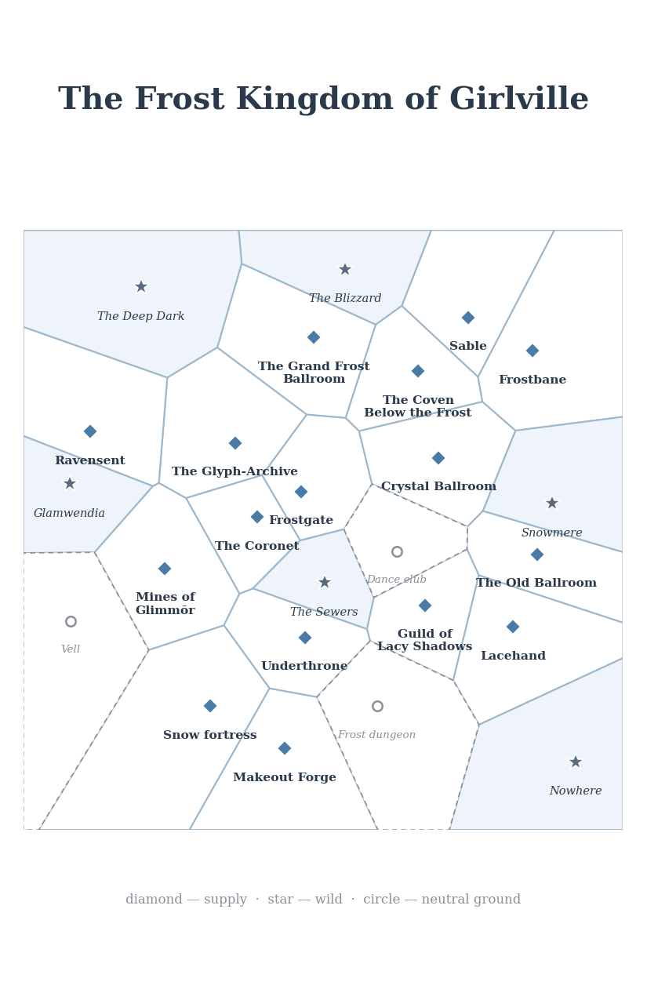

Genre. Romantic dark fantasy run through high-school melodrama, with a vein of pop-cosmic horror underneath. On the handbook's buffet this is High Fantasy + Romance + High School — snow fortresses, frost dungeons, and dance clubs; bosses who are your exes; a prom that matters as much as any battlefield. It sits far on the fantastic end of the axis: Cryomancy is real, the Blizzard of Heartbreak is weather and a feeling, and goblins and wizards go to prom together.
Theme. Reclamation — of a kingdom, of a self, of a story that someone else got to tell about you. Every mechanic in this game asks the same question the source material asks: what does it cost to take back what was yours, and who do you become while you're taking it? Obsession, emotional turbulence, and jealousy aren't flaws to sand off your character; they're fuel, and like all fuel, they burn.
Mood. Everything sparkles and everything can cut you. Play it glitter-bright on the surface — entrances, dance floors, coronets — and let the cold underneath do the real work. The game is at its best when a triumph feels like a music video and a failure feels like reading old texts at 2 a.m.
The Cortex Prime Game Handbook, a set of polyhedral dice per player, glitter tokens (actual glitter, if you dare), and 3–5 players. One player is the GM, who runs the Twelve Princes, the factions, and the Blizzard of Heartbreak itself. Everyone else plays a winter elf of Girlville — or a fester witch, a sewer orc, or a goblin, because prom is for everybody.
Every PC is built from two prime sets — Values and Relationships — plus Distinctions and the setting's signature extras: Cryomancy abilities, Perks, and a pool of Glitter. This is Cortex at its most Smallville: the game's prime sets are its social traits — intensity of belief and intensity of bond. Only one trait from a given set enters a pool for free; a second costs a glitter die.
How intensely your elf is invested in an idea — a high rating is intensity, not virtue. Assign ⑩, ⑧, ⑧, ⑥, ⑥, ④, one per value. Each Value carries a statement you write for your character; a statement can be challenged — act directly against it to triple the die for one roll, then step the Value down afterward.
| Value | What it measures | Example statement |
|---|---|---|
| Heartbreak | How much of you is still back there | "I never cry at the ballroom anymore." |
| Obsession | How tightly you hold a thought | "I have memorized every lie he told." |
| Devotion | What you would burn for | "Girlville comes before my pride." |
| Glamour | How the room sees you | "I arrive like weather." |
| Jealousy | What you can't stand to lose | "No one outshines me twice." |
| Spite | What keeps you warm | "I hope his crown itches." |
Intensity of a bond to another character or group, ④ ("barely registers") to ⑫ ("nobody matters more"), each with a short statement. Every PC names at least three Relationships — and at least one must be an ex: a former lover, ideally one of the Twelve Princes, who still has a die with your name on it. Ex Relationships start one step higher than you assign (to a max of ⑫); the past is load-bearing here.
Reputations variant: one Relationship slot may instead be a standing with a faction — the Guild of Lacy Shadows or the Mercenaries at Makeout Forge — rated the same way. Factions are employers and informants, never opposition pools.
Your Career is one of your three Distinctions — rated ⑧, Hinder free, like any other. Each Career below offers three authored SFX; choose two at creation — the third is unlockable later via a Milestone. What you did for a living is who you are; the dice have finally stopped pretending otherwise.
Infiltration, theft, dungeon-crawling; the Mines of Glimmōr are your second home.
Frost magic.
Dance clubs, courts, proms, reading a room in one glance.
Putrescence, curses, dark energy.
Duels, bodyguarding, entrances that end conversations.
Three per PC at ⑧ — one is your Career (see below). Each carries the free Hinder SFX (gain a glitter die (your choice of kind) when you swap this ⑧ for a ④). Examples:
The Ancient Realm of Glamwendia holds snow fortresses, frost dungeons, and dance clubs — and all of them are open to every people. Choose one at creation; each grants a Talent (a described capability with its own SFX and no die rating).
The feminine race of the Frost Kingdom of Girlville, born of the long night and the long memory. Elves feel everything at full volume and remember all of it.
A cavern-dwelling feminine race that turns putrescence into dark energy. What rots, they rule. Other peoples find them unsettling at galas; the witches find other peoples unsettling everywhere else. Fester witch abilities carry the Rot tag by nature. Fester witch PCs take the Witch career as one of their Distinctions.
Tunnel-born, thick-skinned, fluent in the languages of damp stone and bad decisions. Sewer orcs ended up in the Frost Kingdom the way everyone interesting ends up anywhere: following someone they shouldn't have.
Quick, glitter-mad, and socially frictionless in the way only someone with nothing to lose can be. Goblins run half the dance clubs in Glamwendia and all of the afterparties.
During character creation every PC chooses an astrological sign — the constellation under which their heart first broke. Your sign unlocks one SFX for free at creation, usable with the trait named:
| Sign | Unlocked SFX (with…) |
|---|---|
| The Snowflake | The Edit with Cryomancer — declare one true thing about the ice |
| The Gelatinous Beast | The Folly with Blade — earn a glitter die (your choice of kind) charging something huge |
| The Dagger | The Swap with Raider — use Raider where Blade would fit |
| The Crown | The Exchange with Glamour — step up Glamour, step down Spite this scene |
| The Mirror | The Edit with Socialite — declare what someone really feels |
| The Wolf | The Price with Witch — step up Witch, take a ⑧ complication |
| The Star | The Shutdown with Spite — earn a glitter die (your choice of kind), Spite unusable this scene |
| The Prom Queen | The Swap with Socialite — use Socialite where Cryomancer would fit |
| The Dungeon | The Folly with Raider — earn a glitter die (your choice of kind) splitting the party |
| The Prince | The Price with an ex-Relationship — step it up, take a ⑧ complication |
| The Witch | The Exchange with Heartbreak — step up Heartbreak, step down Obsession this scene |
| The Glitter | The Edit with Glitter dice — declare where glitter can be found |
Choose two perks at creation. Perks are Talents — no die rating, each with its own activation and effect — representing the small unfair advantages that get you through character creation and, honestly, life:
The frost-based magic of Girlville, crafted to mimic the six branches of a snowflake. Cryomancy uses the Ability List: each branch is a single rated trait bundling its descriptor, limit, and SFX, with one effect tag and one descriptor tag — Ice, Rot, or Charm (see Tags, p. 8). A PC with the Cryomancer career knows two branches at creation — one at ⑧, one at ⑥ (see Branch Scholar). Others may learn a branch later by inscribing its glyph (see p. 8) and spending a Milestone unlock. Each branch carries the limit Conscious Activation — it shuts down while you are taken out — plus its own limit below.
Weaponize emotional cold; freeze what you cannot forgive. Limit: cannot harm someone you hold no grudge against — the ice needs a reason. SFX: Shatter — spend a glitter die to step up your effect die against a target suffering a Heartbreak complication.
Armor of mirror-ice; deflects blades and scrutiny alike. Limit: while active, your Glamour complications step up — everyone can see themselves in you, and some of them don't like it. SFX: Reflect — spend a glitter die to turn an attacker's effect die into a complication on them instead of you.
Read the storm; every flake remembers where it has been. Limit: visions arrive as weather, never words — the GM describes, you interpret. SFX: Whiteout Memory — spend a glitter die to ask the storm one question about the past of your current location.
Travel the snow between places; vanish into a whiteout and step out somewhere colder. Limit: you cannot arrive anywhere warm — the drift only goes downhill in temperature. SFX: Cut Across — spend a glitter die to arrive mid-scene somewhere you were not, with a ⑧ Out of Nowhere asset.
Sharpen allies like starlight on ice; lend your shine to someone else's edge. Limit: the target's next failure is yours socially — Glint marks the giver. SFX: Starlight Loan — step down your Glint die for the scene to step up an ally's Glamour or Blade die.
The forbidden warm branch: it melts, it mends, it ends. Thaw can heal complications and end enchantments — including the ones you like. Limit: Growing Dread — 1s and 2s hitch when rolling Thaw; the warmth remembers what the cold was protecting you from. SFX: Spring's Price — spend a glitter die to step down any complication by two steps instead of one on a recovery test.
The Glitter is both a currency and a character affliction — the economy and the cosmic horror are the same substance. It comes in three kinds: Ice, Rot, and Charm. There is a little bit of cosmic horror tied into all of it. The Glitter is older than Girlville, and on quiet nights it whispers in a voice like a music box playing one note wrong.
There are no plot points in Girlville. There is only glitter. Each PC tracks Glitter as a pool of ⑥ dice, starting with 3 — your choice of kinds. At the start of each session, gain one more glitter die (your choice of kind); unspent glitter carries over.
Earn a glitter die — your choice of kind — the way heroines always have: accept a hitch complication, give in during a contest, challenge a Value, Hinder a Distinction, unforgettable roleplay, or roll a ④-rated trait. Glitter can also be mined in the Mines of Glimmōr — the vein's kind is the GM's call (mostly Ice; Rot seams in the deep dark; Charm near the old ballroom).
Spend a glitter die 1-for-1 on anything the fiction allows — club entry, bribes, spell components, a prince's attention, a faster sledge — or on any classic gambit: activate an SFX, add a die, create an asset, keep an extra die, interfere in a contest, trigger déjà vu, or stay standing by taking the complication instead of being taken out. Spent dice are gone — no roll, no risk. The Blizzard keeps them.
Roll unspent glitter dice as Resources: add any number to a pool, but rolled dice are spent and only the highest counts toward your total. This is the dangerous half. Whenever a glitter die you roll comes up a hitch, the Glitter takes hold: gain a Glitter-touched complication (⑥, or stepped up if you already carry one), named for the kind that claimed you — and the complication carries that kind's tag. Each kind afflicts differently:
If every die in a pool hitches and glitter was in the pool — a glitter botch — the GM may add a die to the Doom Pool instead of handing you a complication. The Glitter does not punish you. It notices you.
Ice, Rot, and Charm are descriptor tags — in the Cortex Codex sense, they say how a thing works. Everything glitter-related already carries its kind's tag: glitter dice, mined veins, Glitter-touched complications. Cryomancy branches carry one tag each (p. 7); fester witch abilities are Rot-tagged by nature. Tags unlock SFX, feed prince vulnerabilities (p. 11), and can be added to a branch or witch ability through growth instead of stepping up its die — your Glassveil learns Rot, and now your beautiful illusions fester.
Tags hang on locations too — thick or thin. Where a tag hangs thick, dice carrying it step up once; where it hangs thin, they step down once. The gazetteer notes which tags hang thickest at each address — which is exactly what Glitter Sense tells you on arrival.
Déjà vu — spend a glitter die after seeing your total to reroll your entire pool and take the new result. "This has happened before." Once per test; you cannot déjà vu a déjà vu.
Vampirism — an optional SFX any PC may take at creation: Feed. Activation: a willing or helpless character with glitter dice or a Glitter-touched complication. Effect: drain them — step down your Glitter-touched complication one (or take glitter dice from their pool into yours) and step their complication up one. The fiction should feel exactly as bad as it sounds.
The original game was built to satisfy in one-shot sessions and months-long campaigns. This adaptation defaults to Archetypes — pick a pre-built partial character and be playing in ten minutes — with full scratch-built rules underneath for groups that want total ownership.
Follow the steps above, but choose everything freely: write your own three Distinctions and unlock two SFX beyond Hinder; instead of the fixed Value array, distribute per the standard rules (Values trade up and down in pairs); spend five points on specialties and signature assets. Groups that want the drama to emerge from shared history should instead run Pathways, mapping who-dated-whom across the Twelve Princes' courts — the relationship map this setting deserves.
One of your Relationships must be an ex. The Twelve Princes (p. 11) are shared fiction — pick one, or invent your own and tell the GM which throne he stole. Write the statement as the wound, not the person: "Cassian wears my coronet and my patience is gone" (⑩). He will show up. That is the entire point of the game.
This game uses Complications as its harm mod — flexible enough to cover a sword wound, a ruined reputation, and a broken heart in the same scene, because in Girlville those are frequently the same scene. Setbacks land as named complications (Slashed Bodice ⑧, Humiliated at the Ball ⑩); recover with a recovery test against ⑧+⑧ plus the complication's own die. A complication stepped past ⑫ takes you out of the scene — dramatically, on a freeze-frame, ideally mid-dance.
Dramatic order by default — whoever states a want becomes the dramatic lead; play flows contest to contest. Suits a game that is mostly interpersonal warfare. Switch to action order for raids (the Mines of Glimmōr, a frost-dungeon breach, prom night when it all kicks off): the GM picks an action lead, everyone takes one act around the table, last actor picks next round's lead.
Run contests only against named GMCs — the Twelve Princes, Valford, a Fester Witch matriarch, a named rival. Everything else is a test. In a high-stakes scene, compare effect dice (not totals) for taken-out vs. complicated: bigger effect die than the loser's means taken out; the loser may spend a glitter die to take the complication instead.
The setting's looming threat is weather, heartbreak, and weather-as-heartbreak. The Doom Pool replaces difficulty dice for every test and is the GM's glitter-purse. It opens each session at 2⑥ (colder for higher-stakes campaigns).
When the Doom Pool holds more than twice as many dice as there are players, the Blizzard descends: the next scene opens in whiteout conditions, all recovery tests step up once, and every ex-Relationship in play may be activated by the GM for free. The storm always knows.
Localized, whittle-down-able problems — a smaller doom-pool variant for when the antagonist is the situation. PCs test directly against the crisis to shrink it; at zero dice, it's resolved.
The Frost Kingdom of Girlville is held by a dozen princes who were once the elves' lovers. They are Major GMCs — named, statted, and contestable. Each carries a Wound He Left: a complication the GM may inflict on introduction (no roll, once per prince per campaign — he only gets to make a first impression once).
Each prince is undone by one tag and immune to another. Undone by: when your pool includes a die carrying that tag in a contest against him, step up your effect die one — you found the crack. Immune to: dice carrying that tag cannot be included in tests or contests against him at all. Spent glitter is never "included," so immunity blocks only rolled dice — Charm glitter is still spendable against a Charm-immune prince, just not rollable.
Major GMC and the closest thing Girlville has to a mentor. Valford designed half the glyph-inscriptions in the kingdom and all of the best entrances. He gives quests, lends his miniature (a ⑧ signature asset, Valford Himself, In Miniature, to one PC per session), and absolutely will take your side against a prince — for a price in Glitter and gossip.
The Guild of Lacy Shadows — spies, gossips, and ex-lovers' ex-assistants; they know everything and sell most of it. The Mercenaries at Makeout Forge — blades for hire, paid in coin, kisses, or closure. Both are available as Reputation Relationships, employers, and informants. Per the standing rule of this adaptation: never run a contest against a faction — run it against the named cutout they send, in the room, right now.
The kingdom's sixteen holdings are claimed by seven great powers — princely blocs in a cold war of glitter, gossip, and siegecraft. The wilds between them are unclaimed; the three neutral grounds are unclaimable. Three princes stand outside the seven: Corvin Snowmere, who married the Blizzard and serves as its consort; Larkspur Vell, a wizard, technically, and a disappointment, specifically; and Wren of Nowhere, nobody's ex, who shows up anyway and knows things.
Four archetypes, ready for the ten-minute method. Each lists Distinctions (including Career), Values, Relationships, Cryomancy, perks, Glitter, and a signature asset — fill in statements at the table, in your character's voice.
Tonight is the Winter Prom at the Grand Frost Ballroom — the biggest dance-club night in the Ancient Realm of Glamwendia, and the first prom since the princes took the Frost Kingdom. Every prince will be there, wearing something that used to be yours. Prince Anselm arrives flaunting the Seventh Glyph around his neck — the one the scholars say was never written. The Fester Witches have offered the PCs a Rot Glitter charge big enough to crack the ballroom's frost-dome. And the Blizzard of Heartbreak is one bad slow-dance away from descending on all of it.
This is a situation, not a plot. The PCs want the kingdom, the glyph, their dignity, or just a good night — the prom will give them chances at all four and punish them for reaching.
1. Red-carpet arrivals. Dramatic order. Each PC makes an entrance — Socialite or Glamour against the Doom Pool — and then their ex arrives with someone new. The GM inflicts each prince's Wound He Left on introduction. No one has danced yet and two people are already crying. This is correct.
2. The Mines alarm. Action order. A runner bursts in mid–first dance: the beast is loose, the tunnels are humming, and the bass cannot hold forever. Raid the Mines of Glimmōr in formal wear, whittle down the Gelatinous Beast crisis pool, and be back before the slow dance — where, the GM notes with a straight face, a bad roll may reveal your closest party member has been sleeping with your dwarven ex.
3. The slow dance. Dramatic order, one contest. Anselm crosses the floor and asks the Mage — or whoever holds the highest ex-Relationship die — to dance. It's a contest, and the prize is the Seventh Glyph. The Blizzard of Heartbreak grows a die every exchange nobody gives in. The whole ballroom is watching. Give them something to watch.
Girlville is a game about people who used to love each other holding a kingdom hostage. Frame scenes around wants stated out loud — dramatic order does the rest. Let hitches become complications, not just failures; let the Doom Pool spend itself on entrances, interruptions, and exes arriving at the worst moment. When in doubt, ask the table: "What does your character want right now, and who here knows it?" Then let the dice be honest about the answer.
Every mod in play, grouped by the handbook's categories:
Each PC carries two milestones: one personal (about your ex — "Get my coronet back from Cassian," 1 XP when his name costs you, 3 XP when you confront him in a scene, 10 XP when it's resolved, closing the milestone) and one group ("Reclaim the Frost Kingdom of Girlville," shared 1/3/10 XP triggers). Banked XP buys unlockables: 5 XP for a new perk, an SFX unlock (including your Career's third SFX), or a ④ signature asset; 10 XP to step a trait to ⑩ or learn a new Cryomancy branch (with its glyph); 15 XP for ⑫ steps; 20 XP for the top tier. When an unlock would step up a Cryomancy branch or witch ability, you may instead add a new tag (Ice, Rot, or Charm) to it — a new way to use the ability, per the Codex. Months-long campaigns should also let challenged Value statements rewrite the character — that's the real advancement here.
Every ex has an address. Twenty-two of them follow — where the glitter runs, which prince haunts it, and what it costs to go there.
Frostgate. The seat of the kingdom — the throne the Twelve Princes stole and the address every ex still writes to in her head. The glitter here is Charm, thick as perfume and twice as hard to wash off. Nobody holds Frostgate anymore; everybody performs in it.
The Mines of Glimmōr. Dorian sold them to fund his glow-up, and every elf in Girlville knows the price. The veins run mostly Ice — clean, cold, honest glitter — but the Rot seams near the deep dark pay better and cost more. Bring a Raider. Bring two.
The Crystal Ballroom. The room where it happened, whichever it you mean. The floor remembers every slow dance and every duel fought during one. Charm hangs thickest here — spend it, don't roll it, unless you want the room to remember you Beglamoured.
The Old Ballroom. Older, emptier, and richer than the Crystal. Nobody dances here anymore; everybody digs. Charm veins run under the floorboards, which is why the floorboards are mostly gone.
Makeout Forge. Jaspar founded the Mercenaries at Makeout Forge, and all contracts are still paid in kisses and regret. The Forge hires out blades for dungeon work and deniability in equal measure — the one outfit in Girlville that will take your glitter and your side in the same transaction. Jaspar himself is Undone by Ice and Immune to Charm: bring a grudge, not a smile.
The Guild of Lacy Shadows. Ivo runs the Guild like a spurned fan club, which is exactly what it is. Spies, gossips, and readers of other people's texts — the Guild sells information and buys silence, and Ivo knows about the texts. All of them. He is Undone by Charm and Immune to Rot: flatter him, but don't bring the rot.
The Coven Below the Frost. The fester witches dwell in caverns the way the rest of Girlville dwells in grudges: completely, and on principle. What rots, they rule — every witch ability carries the Rot tag by nature. Prince Sable Mor haunts the coven's edges, collecting apologies he never gives; he is Undone by Ice and Immune to Rot, like everything else down here.
The Glyph-Archive. Anselm stole a sacred glyph for a necklace — Sacrilege, But Make It Fashion — and the Archive has been auditing itself ever since. Six of the Seven Sacred Glyphs are accounted for. The seventh is around somebody's neck. Cryomancers come here to learn branches the slow way; Anselm is Undone by Ice and Immune to Charm, so bring homework, not heart-eyes.
The Grand Frost Ballroom. The Winter Prom lives here — the biggest dance-club night in the Ancient Realm of Glamwendia, and the first prom since the princes took the kingdom. Every prince will be there, wearing someone new. The floor remembers every slow dance; Charm glitter pools in the corners like spilled perfume, and the staff sweeps it up and sells it back to you. Dance here and your Socialite die steps up — the whole room is a dance floor. Session One starts here. Everybody cries before the first song ends. This is correct.
The Underthrone. Fenwick Underthrone's seat — or his cell, depending on which of his notes you believe. He rules the sewers from beneath the throne he never got to sit on, which makes him the only prince who lost twice. The glitter here is Rot: damp, patient, and oddly legible. He sends up notes. The notes are always about you. Undone by Ice, Immune to Rot — bring the coldest version of yourself, the one from before all this.
Federwald. Milo Ravensent ended it by raven, in winter, during a siege — and the ravens never left. They roost in the black pines of Federwald and deliver other people's endings now, for a fee paid in Ice glitter. His Wound is Read at Midnight ⑩: somewhere in Federwald there is a letter you never opened, and it is still midnight there. Undone by Charm, Immune to Ice. Flatter the birds, not the prince.
Runewick. Halloran Frostbane claims he doesn't remember it that way. Winter's memory says otherwise — Winter's Memory Says Otherwise ⑩ — and in Runewick the snow keeps receipts. Every footprint you ever left together is still here, under glassy ice. Cryomancers come to read them; the rest of us come to pretend we don't. Undone by Ice, Immune to Charm: the truth works here. Flattery doesn't.
Lacefield. Ivo Lacehand's manor — all gloves, all lace, all lies. The Guild of Lacy Shadows keeps its spillover here: gossips too indiscreet for the Guildhall, spies between assignments. He knows about the texts. All of them. The glitter is Charm, naturally, and it clings to everything. Undone by Charm, Immune to Rot — flatter him rotten, but don't bring actual rot.
Sable. Prince Sable Mor collects apologies he never gives, and Sable is where he keeps them: a gray stone hall of unsent letters, unmade calls, and one very patient fester-witch doorkeeper. The air is thick with Rot and almost-apologies; breathe shallow. His Wound is An Apology Shaped Hole ⑧, and the hall is shaped exactly like it. Undone by Ice, Immune to Rot.
The Coronet. Cassian the Coronet-Thief wears your crown, and the Coronet is where he keeps everything else he's taken: a vault of other people's almosts. He's Wearing It ⑧ — and he'll show you, unasked. The glitter here is Charm, stolen like everything else. Undone by Rot, Immune to Charm. Don't admire the collection. Rot it.
Snow fortress. A claimed border fortress — walls, a gate, and somebody's ex's banner hanging over both. The glitter here is Ice, packed hard into the ramparts; the garrison burns it for heating and morale, in that order. Bring a Raider, bring a ladder, bring whoever you were before the siege.
The Blizzard. Far north, past the last apology. Corvin Snowmere married the Blizzard — it seems happy — and his Wound is Replaced by Weather ⑩, which tells you everything about the marriage. The Blizzard is Immune to Ice (it is ice, all the way down) and Undone by Rot: the only thing that breaks weather is something that festers.
The Deep Dark. The Rot seams live here, and they pay better than the Ice veins and cost more than the Charm ones. Nobody haunts the Deep Dark; it haunts back. Mine here and the glitter hitches more often — or so the Raiders say. The ones who came back.
Glamwendia. The Ancient Realm, the old country, the place on the map that's bigger than the map. Nobody goes back — there's nothing to go back to that the princes haven't already ruined or renamed. The roads out are all one-way and all uphill. Wild country, mostly: beautiful, unheld, and completely uninterested in your milestones.
Snowmere. Corvin Snowmere married the Blizzard — it seems happy — and Snowmere is where the wedding happened: a black lake under a white sky, frozen mid-vow. The ice here is the purest Ice glitter in the kingdom, and the fishing is terrible. His Wound is Replaced by Weather ⑩, which tells you everything about the marriage. Skate carefully. The lake remembers being water.
Nowhere. Prince Wren of Nowhere. Nobody's ex. Shows up anyway. Knows things. Nowhere is exactly what it sounds like — the blank space past the last marker, where the map gives up and the GM takes over. Wren is usually already there. His Wound is Why Is He Here ⑧, and nobody has ever answered it to his satisfaction. Bring Glitter Sense: the nearest unclaimed glitter is always just past where you thought the edge was.
The Sewers. Fenwick rules the sewers now. He sends up notes. The sewer orcs were here first and will tell you so, at length, in the languages of damp stone and bad decisions. The melt runs under the whole kingdom and surfaces here — black water, old ice, everything the frost threw away. The glitter down here is Rot — everything is — and Fenwick is Undone by Ice, Immune to Rot: the coldest thing you can bring him is yourself, from before all this.
Waymeet, the frost dungeons, and the dance clubs dotting the borders are neutral ground — no one holds them, everyone bleeds in them.
The Blizzard of Heartbreak is always on the horizon.
Bring a coat. Bring your ex's crown.
Leave the glitter — it'll follow you anyway.
The High Winter Elves of Girlville is an unofficial fan adaptation.
The original game is described in The Onion's reporting;
this Cortex Prime conversion is a work of parody and affection.
Not affiliated with Olivia Rodrigo, The Onion, or Fandom Tabletop.